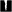

Möllschlucht
Useful Information
| Location: |
Hof 21, 9844 Hof.
B 107 (Großglockner Straße) to Heiligenblut, Hof is 500 m down the valley from Heiligenblut. The trail to the gorge starts at Gasthof Sonnblick. (47.030666, 12.852401) |
| Open: |
no restrictions. Guided: 15-JUN to 14-SEP Wed 10. [2022] |
| Fee: |
free. Guided: Adults EUR 70, Children (12-16) EUR 45. [2022] |
| Classification: | Gorge |
| Light: | n/a |
| Dimension: | |
| Guided tours: | self guided, L=700 m, VR=60 m, D=90 min. |
| Photography: | allowed |
| Accessibility: | no |
| Bibliography: | |
| Address: |
Information and Booking Center Heiligenblut am Großglockner, Hof 38, 9844 Heiligenblut am Großglockner, Tel.: +43-4824-2700-20, Fax: +43-4824-2700-4.
E-mail: Landgasthof Sonnblick, Hof 21, 9844 Hof, Tel: +43-4824-2131. |
| As far as we know this information was accurate when it was published (see years in brackets), but may have changed since then. Please check rates and details directly with the companies in question if you need more recent info. |
|
History
Description
The Möllschlucht is different from all other gorges we have listed. Normally such gorges have a trail, which may be steep but is always safe and easy to walk. Normally a little surefootedness and walking shoes are all you need. This gorge is a Klettersteig (via ferrata), which means you have to climb, on a breathtaking trail. There is no railing, only a 420 m long steel rope and some rope bridges. You have to bring climbing gear, helmet, and some skill. Nevertheless, the spectacular gorge has become a visitor magnet for climbers.
The via ferrata requires climbing gear, helmet, physical fitness and climbing skills. A harness, sling and carabiner are the absolute minimum for climbing protection. Surefootedness and a head for heights are an absolute must. You can go on your own or book a tour led by a state-certified mountain guide, which includes rental equipment (harness, helmet, climbing-set).
The gorge actually has two parts. The first part has difficulty C and most people return at this point. For the true climbers there is section 2 with difficulty D/E.
As this is a via ferrata, there are other rules than for tourist gorges, there are no open hours and no entrance fees. Austrians are well-used to mountains and climbing, and they are convinced people are able to decide if they are able to make it. It is common sense to go only on good weather in the months between June and October, because in winter everything is icy, in spring there are floods, and it is also very dangerous in bad weather. The via ferrata starts at the bridge across the Möll river in front of the Landgasthof Sonnblick. You can park yur car at their parking lot for free, change into climbing gear at the parking lot. The dam below the bridge at the entry to the gorge is a good marker: the crest of the dam has teeth, when these are flooded the via ferrata is unsafe.
 Search DuckDuckGo for "Möllschlucht"
Search DuckDuckGo for "Möllschlucht" Google Earth Placemark
Google Earth Placemark Adventure Ferrata Möllschlucht (visited: 18-OCT-2022)
Adventure Ferrata Möllschlucht (visited: 18-OCT-2022) (visited: 18-OCT-2022)
(visited: 18-OCT-2022) Index
Index Topics
Topics Hierarchical
Hierarchical Countries
Countries Maps
Maps